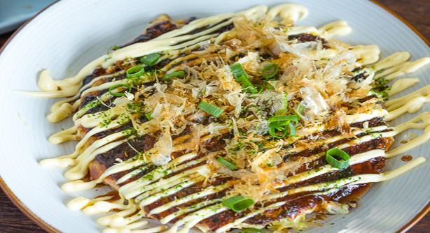

OKONOMIYAKI (お好み焼き)
Okonomiyaki is a Japanese savory pancake. Okonomiyaki originates from Osaka with the words okonomi, meaning "how you like" and yaki meaning "grill".The basic ingredients for okonomiyaki consists of a batter made from flour, grated nagaimo, dashi stock, eggs and shredded cabbage and other ingredients such as pork, shrimp, Okonomiyaki sauce, mayonnaise, dried seaweed and dried fish flakes can be added depending on preference as stated in the name. Click HERE for more information.